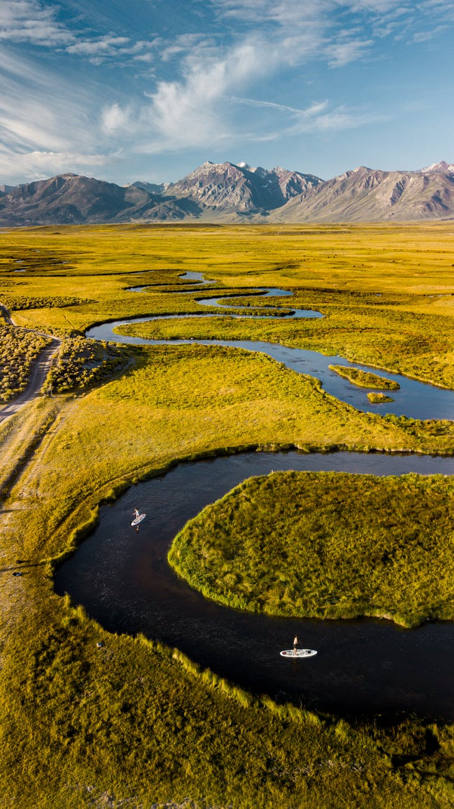

El ecosistema es el conjunto de especies de un área determinada que interactúan entre ellas y con su ambiente abiótico; mediante procesos como la depredación, el parasitismo, la competencia y la simbiosis, y con su ambiente al desintegrarse y volver a ser parte del ciclo de energía y de nutrientes. Las especies del ecosistema, incluyendo bacterias, hongos, plantas y animales dependen unas de otras. Las relaciones entre las especies y su medio, resultan en el flujo de materia y energía del ecosistema.
El significado del concepto de ecosistema ha evolucionado desde su origen. El término acuñado en los años 1930's, se adscribe a los botánicos ingleses Roy Clapham (1904-1990) y Sir Arthur Tansley (1871-1955). En un principio se aplicó a unidades de diversas escalas espaciales, desde un pedazo de tronco degradado, un charco, una región o la biosfera entera del planeta, siempre y cuando en ellas pudieran existir organismos, ambiente físico e interacciones.
Más recientemente, se le ha dado un énfasis geográfico y se ha hecho análogo a las formaciones o tipos de vegetación; por ejemplo, matorral, bosque de pinos, pastizal, etc. Esta simplificación ignora el hecho de que los límites de algunos tipos de vegetación son discretos, mientras que los límites de los ecosistemas no lo son. A las zonas de transición entre ecosistemas se les conoce como “ecotonos”.
Durante los pasados veinte años, se ha propuesto que el manejo de recursos naturales debe hacerse con un enfoque ecosistémico, es decir, incluyendo a todo el ecosistema. El manejo debe mantener o mejorar al ecosistema y debe proporcionar una variedad de bienes y servicios a las generaciones presentes y a las futuras.
Entre los ingredientes del manejo de ecosistemas están:

Las actividades humanas, como la extracción de madera, plantas, fauna, la agricultura, ganadería, desarrollo urbano y de infraestructura, modifican las características originales de los ecosistemas. Algunas de estas actividades cambian la composición de especies o su abundancia, otras modifican completamente al ecosistema.
En muchos casos, si queremos seguir obteniendo los servicios ambientales y los recursos que los ecosistemas nos proporcionan es necesario restaurarlos, es decir, necesitamos reconstruir sus características originales. Esto que suena tan sencillo, no lo es. En primer lugar, para la mayoría de los ecosistemas desconocemos cuáles eran sus características originales, qué especies dominaban el paisaje, en qué abundancia, etc., ya que la influencia de las actividades humanas puede tener cientos o miles de años.
En segundo lugar, es necesario tener un buen conocimiento de los procesos de perturbación natural de la región y de la sucesión vegetal para ir reconstruyendo el suelo, la composición (tipos de especies) y estructura (abundancia relativa) de plantas y animales que devuelva las funciones del ecosistema.
Al estudio de los procesos de renovación de ecosistemas degradados o destruidos se le conoce como ecología de la restauración.